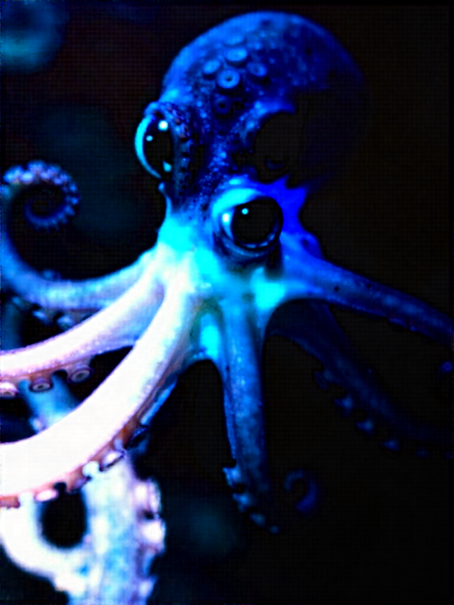
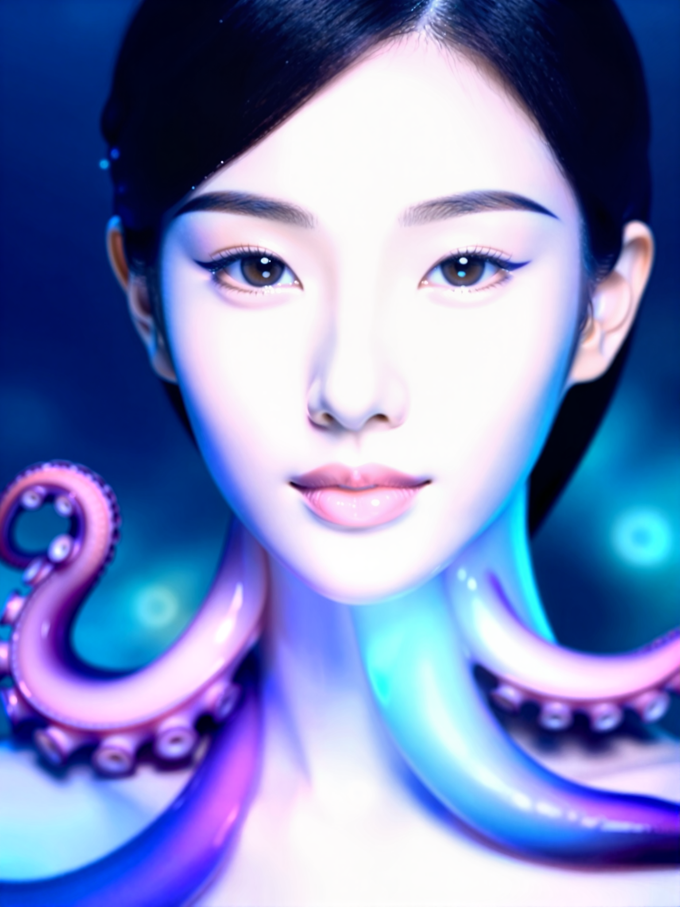
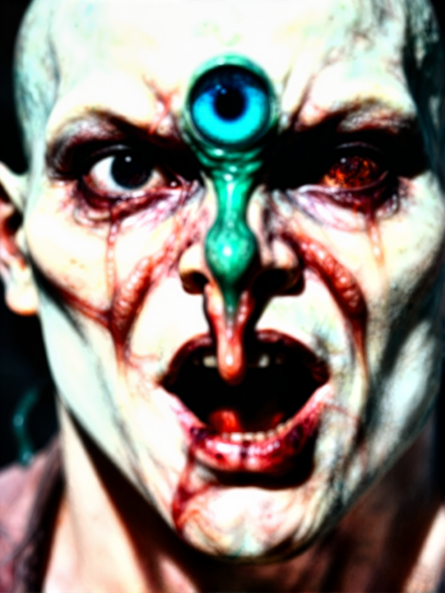
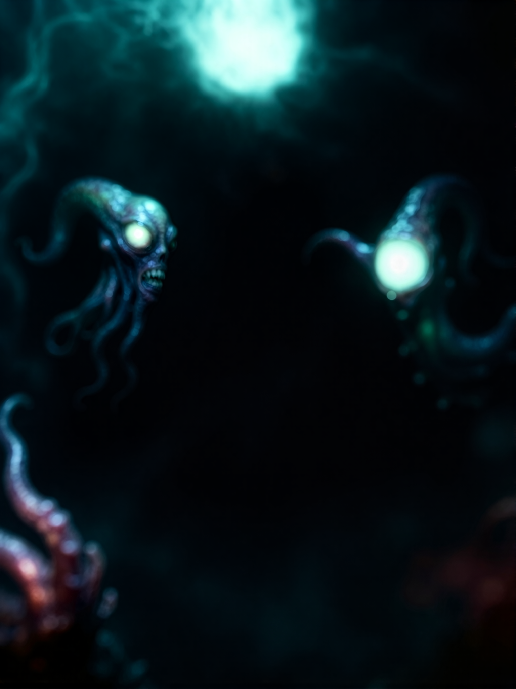

ComfyUI Image-to-Image 風格轉換實作
1. 原始照片 vs 生成成果

原始照片 (Input Selfie)

生成成果 (Cthulhu Octopus Entity)
2. 使用之提示詞 (Prompts)
正向提示詞 (Positive Prompt)
(masterpiece, best quality:1.2), extreme close-up fisheye low-angle perspective, exact original facial proportions and composition, organic octopus creature hybrid, bulbous octopus mantle head, wet iridescent cephalopod skin, suction cups lining the jawline and chin, slimy tentacles hanging from lower mouth, glossy alien eyes matching original eye placement, biological deep sea entity, dramatic specular highlights, cinematic lighting, photorealistic macro texture
反向提示詞 (Negative Prompt)
(worst quality, low quality:1.4), normal human face, smooth porcelain skin, pretty girl, female, cartoon, anime, 3D CGI, changed composition, changed camera angle, distant shot, extra eyes, mutated extra nostrils, blurry, bad anatomy
3. ComfyUI 工作流程 (Workflow)

架構說明：拆開使用獨立的 Diffusion Model、CLIP 和 VAE 載入器。照片進 VAE 編碼 轉成 Latent 後拉進 KSampler，搭配正反提示詞控制重繪強度，最後再透過 VAE 解碼 輸出成品圖。
4. 實作心得與詳細實驗過程
這次用 ComfyUI 真的被搞了一陣子。跟以前那種按一個按鈕就出圖的軟體不一樣，這裡模型、CLIP、VAE 全部都要自己一條一條線拉好。中間有好幾次算出來怪怪的，後來回頭檢查才發現是提示詞那兩個框框右邊的小點根本沒插到 KSampler 上，等於 AI 根本沒吃到我的 Prompt 就自己亂算。
本次目的在於「讓生成的章魚圖片能對照我的五官位置」。因為我的原圖是用手機由下往上拍的大仰角，鼻子特別大，要把這張臉改成章魚而且角度不能跑掉，中間試了好幾版才成功：
第 1 次嘗試（Denoise 1.00、線沒接好）：
一開始什麼都沒改直接按執行，去雜訊強度停在 1.0，提示詞的線也沒插好。算出來直接傻眼，黑漆漆的背景裡飄著兩隻不知道哪來的小章魚怪，我原本由下往上的大鼻子自拍直接被抹得一乾二淨，完全沒有原圖的影子。
一開始什麼都沒改直接按執行，去雜訊強度停在 1.0，提示詞的線也沒插好。算出來直接傻眼，黑漆漆的背景裡飄著兩隻不知道哪來的小章魚怪，我原本由下往上的大鼻子自拍直接被抹得一乾二淨，完全沒有原圖的影子。
第 2 次嘗試（Denoise 0.70）：
把 Denoise 降到 0.7，提示詞加上克蘇魯風格。這次總算有大特寫了，但長得超可怕——整張臉慘白大張嘴，額頭中間還硬生生爆出一顆綠色大眼球，看起來根本是喪屍不是章魚，完全沒有我要的黏滑軟體動物感。
把 Denoise 降到 0.7，提示詞加上克蘇魯風格。這次總算有大特寫了，但長得超可怕——整張臉慘白大張嘴，額頭中間還硬生生爆出一顆綠色大眼球，看起來根本是喪屍不是章魚，完全沒有我要的黏滑軟體動物感。
第 3 次嘗試（改提示詞修臉）：
覺得第 2 版太醜，我想說加點好看的詞修一下，結果加了 portrait 跟一些人像字眼後，AI 直接跑偏，算出來變成一個皮膚超好、畫著眼線的漂亮女生，只有脖子旁邊意思意思長了兩根章魚鬚。雖然變好看了，但這根本不是我要的整隻章魚怪物，原圖的搞笑角度也沒了。
覺得第 2 版太醜，我想說加點好看的詞修一下，結果加了 portrait 跟一些人像字眼後，AI 直接跑偏，算出來變成一個皮膚超好、畫著眼線的漂亮女生，只有脖子旁邊意思意思長了兩根章魚鬚。雖然變好看了，但這根本不是我要的整隻章魚怪物，原圖的搞笑角度也沒了。
第 4 次嘗試（Denoise 降到 0.50、Prompt 鎖定位置）：
最後發現問題出在 Denoise 還是太高，而且 Prompt 不能出現任何跟「人」有關的詞。我把負向提示詞填滿 human face、woman，正向詞特別寫「吸盤長在下巴跟嘴邊」、「眼睛要對齊原本的位置」，最關鍵的是把 Denoise 壓到 0.5 左右。這次一按執行就對了，AI 死死咬住原本由下往上的大頭透視，但整張臉的皮肉全部變成發光的藍色章魚跟觸手，五官位置跟我的自拍照完全對得上。
最後發現問題出在 Denoise 還是太高，而且 Prompt 不能出現任何跟「人」有關的詞。我把負向提示詞填滿 human face、woman，正向詞特別寫「吸盤長在下巴跟嘴邊」、「眼睛要對齊原本的位置」，最關鍵的是把 Denoise 壓到 0.5 左右。這次一按執行就對了，AI 死死咬住原本由下往上的大頭透視，但整張臉的皮肉全部變成發光的藍色章魚跟觸手，五官位置跟我的自拍照完全對得上。
試完這幾輪最大的收穫就是搞懂 Denoise 到底在幹嘛。調太高 AI 就放飛自我亂畫，調太低又只像套濾鏡。只要把數值抓在 0.5 左右，搭配精確講好位置的 Prompt，就能在保留自己臉型角度的同時把材質全部換掉。
5. 過程踩坑與失敗產物區



